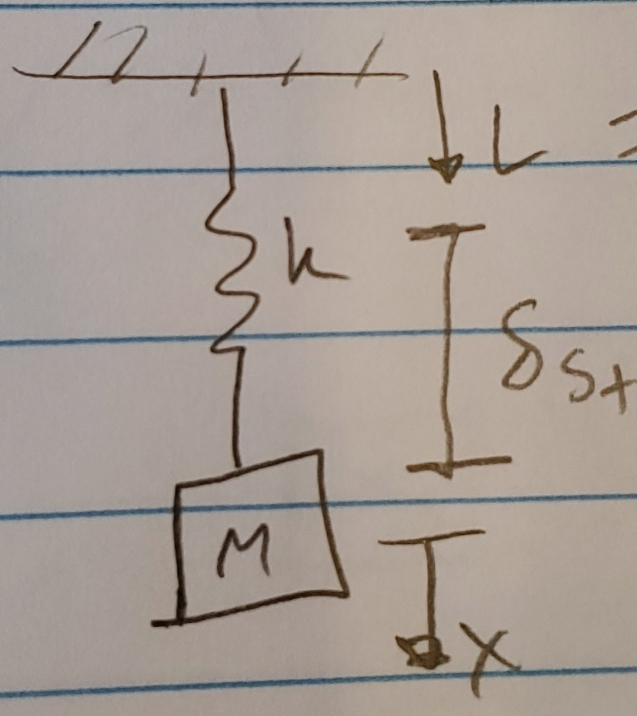

MECH 343
Table of Contents
Menu
8/27/21
Dynamic systems
- modeling systems (equations of motion)
- system behavior (solutions x(t))
Rigid body mechanical systems
Newton's second law \[ m\vec{a} = m\frac{d\vec{v}}{dt} = \vec{F} \]
scalar: \[ ma = m\frac{dv}{dt} = f = m\dot{v} \] –> no zeros!
\[ m\dot{v} = f(x) \] \[ [v\,dt]\,m\dot{v} = f(x)[v\,dt] \] \[ \int mv\,dv = \int f(x)\,dt = \int \frac{dx}{dt} f(x)\,dt = \int f(x)\,dv \]
this finally results in:
\begin{equation} \frac{1}{2}mv^2 = \int f(x)\,dx + C \\ \small{\textit{kinetic energy = work + integration constant}} \end{equation}If work done by f(x) is done independent of path (conservative), then f(x) can be derived from another function: V(x)
- Variable force case (conservative)
\[ \int f(x) = \int \frac{-dV}{dx} \small{\textit{where f(x) is a conservative force}} \]
\[ \int f(x)\,dx = \int -dV \]
\[ -\int f(x)\,dx = V(x) \]
Think back to equation 1, plug in the above equation into f(x)
\begin{equation} \frac{1}{2}mv^2 + V(x) = C \\ \small{\textit{therefore, V(x) = potential energy}} \end{equation}\[ \Delta KE + \Delta PE = 0 \]
\[ \frac{1}{2}m(v^2 - v_0^2) + [V(x) - V(x_1)] = 0 \]
\begin{equation} \frac{1}{2}mv^2_0 + V(x) = \frac{1}{2}mv^2 + V(x) \small{\textit{@ t = 0}} \end{equation}Constant force case, f = constant
\begin{equation} \frac{1}{2}mv^2 = f(x-x_0) + \frac{1}{2}mv^2_0 \\ \small{\textit{work done by f, "f" * (delta X)}} \end{equation}
- Dry friction force
- non-conservative, work depends on path taken
- therefore coulomb friction can't be derived from a PE function -> conservation of mechanical energy is not conserved (heat, etc.)
- Rotational is the same, but mass -> inertia
Translational V -> Rotational V - Newton's 2nd: \[ I_o * \dot{\omega} = m_0 \]
- Mass moment of inertia: \[ I = \int r^2\,dx \]
In this class, use common geometry inertia moments :) - Parallel axis theorem
If rotating about point other than center of mass, apply PAT: \[ I_o = I_s + md^2 \]
\[ \small{\textit{where I_o is the inertia about rotation axis, I_s is inertia about symmetry axis, and md^2 is mass * distance between o and s}} \] energy of rotational motion
work done by moment M causes rotation through angle θ\[ w = \int_{0}^{\theta} m\,d\theta \]
\[ I\omega\,d\omega = m\,d\theta \]
\[ KE = \frac{1}{2}I\omega^2 \]
Do the same steps as needed with the translational system
Pulley dynamics
- Changes direction of applied force
- Amplify forces
- Assumptions:
assume pulley cable is inextensible
assume no slipping
If left side of equation is negligible, T1 ~= T2
is negligible when:
\[ \ddot{\theta} = 0 \\ \small{\textit{velocity = constant}} \]
or when I is very small

- If we neglect I, system moves when m1 > m2
If we don't:
\[ \Delta KE + \Delta PE = 0 \]
\[ KE = \frac{1}{2} m_1\dot{x}^2 + \frac{1}{2}m_2\dot{y}^2 + \frac{1}{2}I\dot{\theta}^2 \]
\[ PE = m_2 g y - m_1 g x \]
\[ 0 = \frac{1}{2} m_1\dot{x}^2 + \frac{1}{2} m_2\dot{x}^2 + \frac{1}{2} I(\frac{\dot{x}}{R})^2 + m_2 g x - m_1 g x \]
\[ 0 = \frac{1}{2} (m_1 + m_2 + \frac{I}{R^2})\dot{x}^2 + (m_2 - m_1) g x = 0 \]
\[ \dot{x} = \sqrt{\frac{2(m_1 - m_2) g x}{m_1 + m_2 + \frac{I}{R^2}}} \]
therefore dot{x} is positive when m1 > m2
8/30/21
9/10/21
Car suspension example
Not including mg
Draw FBDs of masses, springs, dampers.
On springs/dampers, forces point outwards from the spring.
\[ f_{k_2} = k_2 (x_2 - x_1) \]
\[ f_{b_2} = b_2 (\dot{x}_2 - \dot{x}_1) \]
\[ f_{k_1} = k_1 (x_1 - x_p) \]
\[ f_{b_1} = b_1 (\dot{x}_1 - \dot{x}_p) \]
Apply Newton's 2nd law:
\[ \Sigma F = m\ddot{x} \]
\[ m_2 \ddot{x}_2 = -f_{k_2} - f_{b_2} \]
Swap in definitions for the forces to find the EOMs
\begin{equation} m_2 \ddot{x}_2 + k_2 (x_2 - x_1) + b_2 (\dot{x}_2 - \dot{x}_1) = 0 \end{equation} \begin{equation} m_1 \ddot{x}_1 + k_1 (x_1 - x_p) + b_1 (\dot{x}_1 - \dot{x}_p) - b_2 (\dot{x}_2 - \dot{x}_1) - k_2 (x_2 - x_1) = 0 \end{equation}
If you reverse the directions of the forces, so they point inward on the spring FBDs, you end up with the same result.
This is because the forces in the Newton's 2nd equation change sign, and the force definition changes sign.
Negative of a negative = positive, it's the same thing!
Including mg
When mg is included:
\[ \delta_{st} = \small{\textit{static equilibrium deflection}} \]
and L = length of unstretched spring.
\begin{document} \[ L + \delta_{st} = length of spring when only mg is acting on it (no applied force) \] \end{document}figure out why this ^^^ doesn't work!